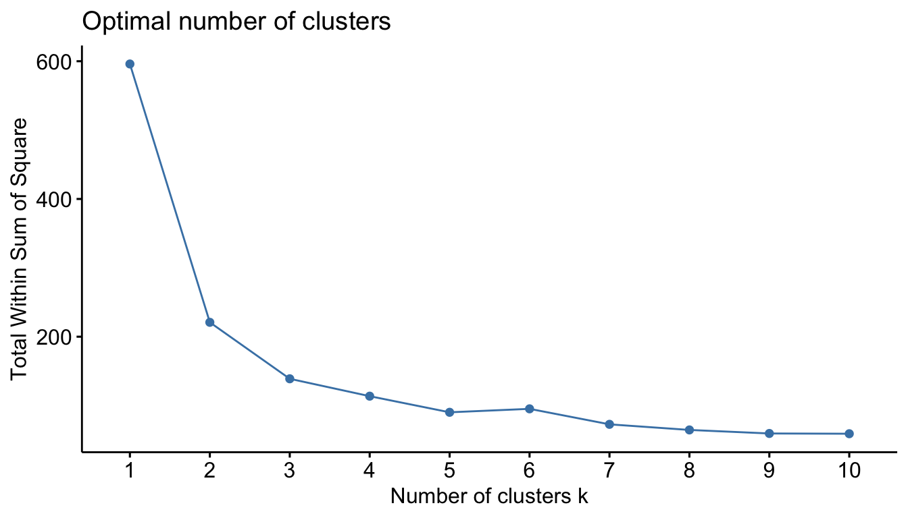
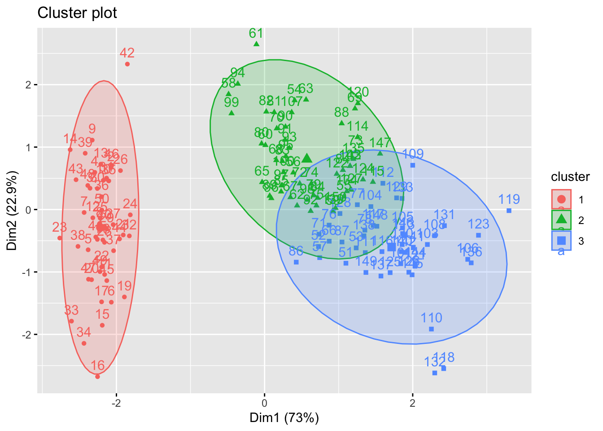
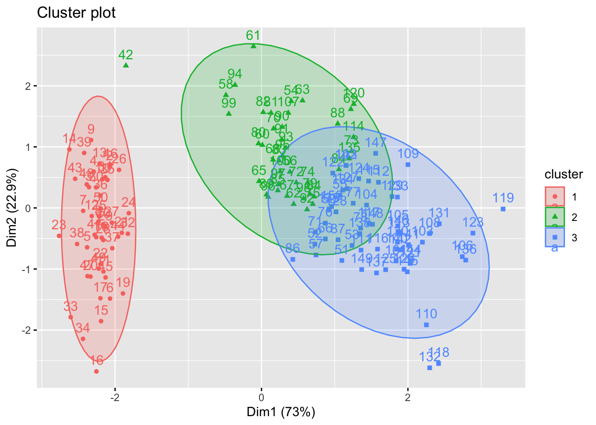
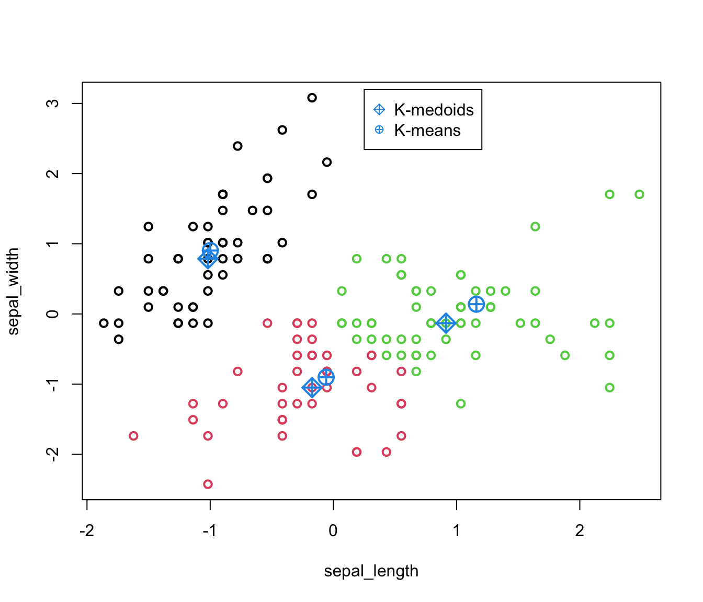
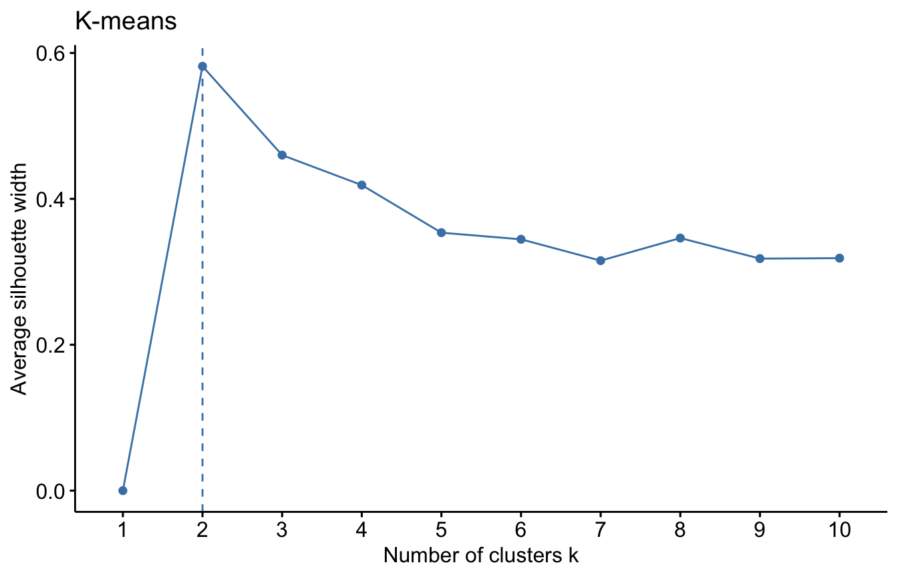
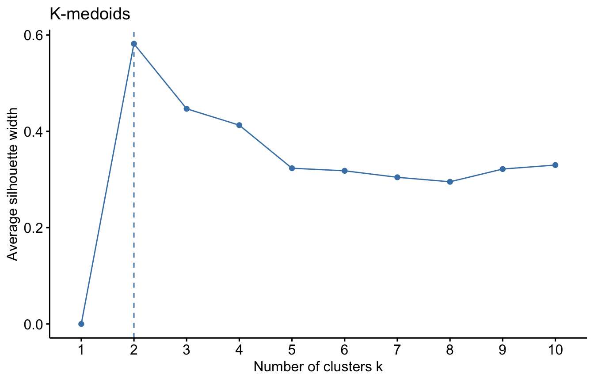
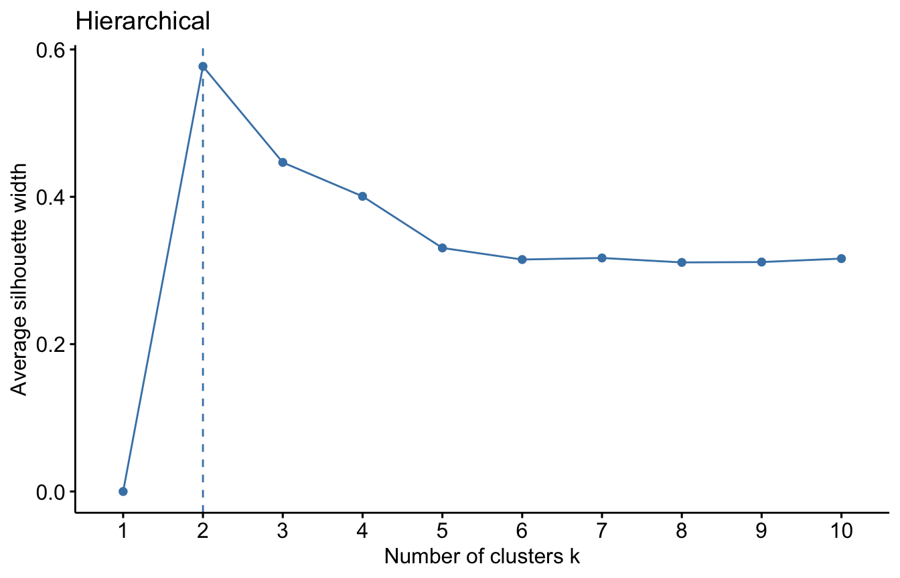

iris.scaled <- scale(iris[, -5])Lecture 7a - K-means clustering
Clustering is one of the main tools in unsupervised learning, It provides a powerful and versatile technique for discovering hidden patterns and inherent structures within data sets. Clustering algorithms group similar data points together based on inherent similarities or distances, revealing natural subdivisions within the data set. By facilitating the automatic exploration of data relationships, clustering contributes to a deeper understanding of complex datasets and supports informed decision-making processes in various real-world applications.
There are many clustering algorithms. We start by exploring the most popular ones, using K-means and K-medoids (a robust alternative to K-means). We will understand the algorithm used to program K-means and understand how we can combine PCA with K-means clustering for a more effective visualisation. At the end of the workshop, we will also understand why K-medoids is robust to outliers.
K-means
Here we use Iris dataset to apply the K-means clustering. Recall that iris data set has a natural category for the species (three levels: Setosa, Versicolor, Virginica), which is helpful for clustering. A natural motivating question for our exploration is:
We first scale the data.
Does this make sense to you? Why?
Click for answer
Yes, it makes sense because clusters are computed using distances, hence unscaled data will result in more scattering in the directions of higher variance. The mean is not really important here, but the variance is.
We will use the kmeans() command, which is already implemented in R. Let’s explore its features:
?kmeansWe can see that the command requires us to specify the “centers”, or at least the number of clusters.
We use a screeplot measuring the effectiveness of the clusters weighted by the number of clusters (we will see in lectures the theory behind this).
In practice, this is accomplished using the fviz_nbclust() function from the factoextra package.
library(factoextra)fviz_nbclust(iris.scaled, kmeans, method = "wss") 
This Figure is treated the same way as we did with the scree plot. We locate the bend (elbow) in the plot. This seems to be at \(k=3\). So we will use three clusters for the analysis.
The model can be fitted as follows:
# Compute k-means with k = 3
set.seed(123)
km.res <- kmeans(iris.scaled, 3, nstart = 25)
The option nstart = 25 means that R will try 25 different random initial cluster assignments and then select the best results corresponding to the one with the lowest within cluster variation (more of this in lectures).
names(km.res)[1] "cluster" "centers" "totss" "withinss" "tot.withinss"
[6] "betweenss" "size" "iter" "ifault" The output of clustering consists of 9 categories. The most important are:
- “cluster”: the assignment of a number from 1 to 3 (the cluster) to each observation
- “centers”: the cluster means for each cluster. The algorithm minimizes the distances from these centers
- “withinss” : the sum of square distances of points from centers of a cluster for each cluster
One measure of effectiveness is the variability accounted for with this clustering method. Can you see from the output how it is computed and what is the result in this case?
Click for answer
km.resK-means clustering with 3 clusters of sizes 50, 53, 47
Cluster means:
Sepal.Length Sepal.Width Petal.Length Petal.Width
1 -1.01119138 0.85041372 -1.3006301 -1.2507035
2 -0.05005221 -0.88042696 0.3465767 0.2805873
3 1.13217737 0.08812645 0.9928284 1.0141287
Clustering vector:
[1] 1 1 1 1 1 1 1 1 1 1 1 1 1 1 1 1 1 1 1 1 1 1 1 1 1 1 1 1 1 1 1 1 1 1 1 1 1
[38] 1 1 1 1 1 1 1 1 1 1 1 1 1 3 3 3 2 2 2 3 2 2 2 2 2 2 2 2 3 2 2 2 2 3 2 2 2
[75] 2 3 3 3 2 2 2 2 2 2 2 3 3 2 2 2 2 2 2 2 2 2 2 2 2 2 3 2 3 3 3 3 2 3 3 3 3
[112] 3 3 2 2 3 3 3 3 2 3 2 3 2 3 3 2 3 3 3 3 3 3 2 2 3 3 3 2 3 3 3 2 3 3 3 2 3
[149] 3 2
Within cluster sum of squares by cluster:
[1] 47.35062 44.08754 47.45019
(between_SS / total_SS = 76.7 %)
Available components:
[1] "cluster" "centers" "totss" "withinss" "tot.withinss"
[6] "betweenss" "size" "iter" "ifault" The portion of variability explained is computed as the fraction of “sum of squares between clusters” over “total sum of squares”. It is \(76.7\%\) (a fairly good proportion).
We can find the means of the four variables based on the newly created clusters (check the link on the function aggregate for more details on the aggregate() function that we are going to use). This can be used to evaluate the performance of the clusters that we obtained via K-means relative to the true class labels. We can use the table() function in R to compare the true class labels to the class labels obtained by clustering.
aggregate(scale(iris[,-5]), by=list(cluster=km.res$cluster), mean) cluster Sepal.Length Sepal.Width Petal.Length Petal.Width
1 1 -1.01119138 0.85041372 -1.3006301 -1.2507035
2 2 -0.05005221 -0.88042696 0.3465767 0.2805873
3 3 1.13217737 0.08812645 0.9928284 1.0141287Then, we compare the assignment given by K-means clustering to the true class labels
table(iris$Species, km.res$cluster)
1 2 3
setosa 50 0 0
versicolor 0 39 11
virginica 0 14 36Setosa from our clustering completely agree with the original label of the species. All the 50 observations are correctly clustered. Out of the 50 observations from Versicolor, 39 agrees with the label while 11 observations are labeled as Virginca. 36 observations from Virginca are put in the correct cluster. Overall, 83.3% correct classification is obtained from the algorithm (((50+39+36)/150)*100).
If the number of variables is greater than 2, then visualization is a bit of a challenge. However, when two principal components explain a good portion of the variability, we can use PCA to gain an effective visualization. This is what fviz_cluster() does in practice:
# Visualise kmeans clustering
fviz_cluster(km.res, iris[, -5], ellipse.type = "norm")
This visualization is not perfect, and we should always remember that clustering is computed in the original feature space, not in the plane spanned by PC1 and PC2.
K-medoids
K-medoids algorithm is a clustering approach related to K-means clustering for partitioning a data set into \(k\) clusters. In K-medoids clustering, each center is represented by one of the data point in the cluster. These points are named cluster medoids. Medoid corresponds to the most centrally located point in the cluster. While K-means takes the average (centroid) of the \(k^\text{th}\) cluster to minimise the total within cluster variation, K-medoids replaces this by an optimisation step which restricts the search space to the observations within the \(k^\text{th}\) cluster (see lectures for precise details).
The main advantage of K-medoids over K-means clustering is that it is less sensitive to noise and outliers. Can you think of why?
Click for answer
By restricting the choice of our possible center, we do not allow it to be halfway between outliers and most of the clustering points, resulting in better performance within the cluster points, which are the ones that interest us.
The most common K-medoids clustering methods is the PAM algorithm (Partitioning Around Medoids). We will use a faster implementation of PAM using the CLARA (Clustering Large Applications) function within the cluster package in this workshop. Other packages for K-medoids in R are kmedoids() function in clue package (Cluster Ensembles) and pamk() in the fpc package.
The model is fitted as:
clara(x, k, metric="euclidean" stand=FALSE)
where:
x: data matrix or dissimilarity matrix
k: number of clusters
metric:
euclideanormanhattandistancestand: if set to TRUE, the variables are scaled to have unit variance before the analysis takes place.
library(cluster)
iris.scaled <- scale(iris[, -5])
pam.res <- clara(iris.scaled, k=3)
names(pam.res) [1] "sample" "medoids" "i.med" "clustering" "objective"
[6] "clusinfo" "diss" "call" "silinfo" "data" We are especially interested in medoids which shows the objects representing cluster and clustering which gives a vector containing the cluster number of each object.
pam.res$medoids Sepal.Length Sepal.Width Petal.Length Petal.Width
[1,] -0.89767388 0.7861738 -1.27910398 -1.3110521482
[2,] -0.05233076 -0.8198233 0.08043967 0.0008746178
[3,] 0.79301235 -0.1315388 0.81685914 1.0504160307pam.res$i.med[1] 40 83 148Observe that the flowers n. 40, 83 and 148 from the scaled iris data correspond to the medoids shown above. You can easily check this as iris.scaled[c(40,83,148),]
The cluster for the observations can be obtained as:
pam.res$clustering [1] 1 1 1 1 1 1 1 1 1 1 1 1 1 1 1 1 1 1 1 1 1 1 1 1 1 1 1 1 1 1 1 1 1 1 1 1 1
[38] 1 1 1 1 2 1 1 1 1 1 1 1 1 3 3 3 2 3 2 3 2 3 2 2 2 2 2 2 3 2 2 2 2 3 2 2 2
[75] 2 3 3 3 2 2 2 2 2 2 2 3 3 2 2 2 2 2 2 2 2 2 2 2 2 2 3 3 3 3 3 3 2 3 3 3 3
[112] 3 3 2 3 3 3 3 3 2 3 3 3 3 3 3 3 3 3 3 3 3 3 3 2 3 3 3 3 3 3 3 3 3 3 3 3 3
[149] 3 3We use the table() function to compare the true class labels and the class labels obtained by K-medoids clustering. Does this result offer any improvement over the K-means results obtained above?
table(iris$Species, pam.res$clustering)
1 2 3
setosa 49 1 0
versicolor 0 37 13
virginica 0 4 46An alternative option to get the same result:
We notice that our clustering misclassifies 1 of the setosa species as versicolar (49 out of 50 correctly classified). Virginica species got some improvement over the previous K-means results, only 4 observations are misclassified whereas 14 observations are misclasified in K-means. Overall, 88% ((49+37+46)/150*100) correct classification is obtained under K-medoids whereas 83.3% correct classification was obtained for K-means.
We can use the fviz_cluster function to visualise the clusters as before.
library(factoextra)
fviz_cluster(pam.res, iris[, -5], ellipse.type = "norm")
It might be useful to compare the two pictures
par(mfrow=c(1, 2))
fviz_cluster(km.res, iris[, -5], ellipse.type = "norm")
fviz_cluster(pam.res, iris[, -5], ellipse.type = "norm")
We show in the figure below that the medoids are indeed a data point whereas centroids are not.

Silhouette measure
At the beginning of the workshop, we chose the number of clusters using a screeplot. An alternative, more precise method to determine the optimal number of clusters is the so-called Silhouette measure. We showcase here how to visualize this method for the Iris dataset using the following three algorithms: K-means, K-medoids and Hierarchical clustering (with appropriate linkage). More on the theory behind this in the lectures.
Silhouette width is a quantity associated with every observation inside a cluster. For each algorithm, we can compute the overall average silhouette width inside each cluster. The maximum of these values gives the optimal number of cluster (for each algorithm).
#K-means
fviz_nbclust(iris.scaled, kmeans, method = "silhouette")+
labs(title = "K-means")
#K-medoids
fviz_nbclust(iris.scaled, clara, method = "silhouette")+
labs(title = "K-medoids")
# Hierarchical
fviz_nbclust(iris.scaled, hcut, method = "silhouette")+
labs(title = "Hierarchical")
The optimal number of clusters is two! Were you expecting this result? Why
It is not so surprising, given that the observations from the Versicolor and Virginica varieties cluster well together. The real reason we chose 3 clusters in the analysis of the Iris data set is that we knew there were three different varieties. So, prior knowledge is an important factor in choosing the number of clusters as much as quantitative measures such as Silhouette.
We used the Silhouette measure to select optimal number of clusters within a method. We can select the optimal number of clusters as well as the optimal algorithm using a general validation method implemented in the clValid package. For more info about this, see HERE.